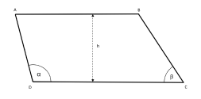

Portal das Formas
Trapezóide Irregular
O trapezóide é uma figura geométrica de quatro lados, onde dois lados são paralelos (as bases) e os outros dois têm comprimentos diferentes. Para calcular sua área, consideramos a média das bases e multiplicamos pela altura
Voltar ao Menu